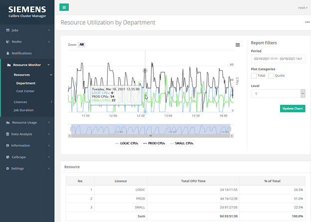
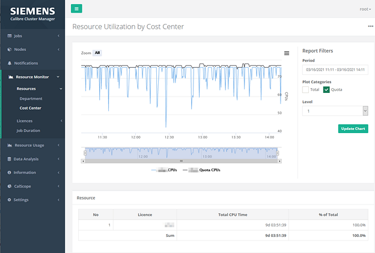
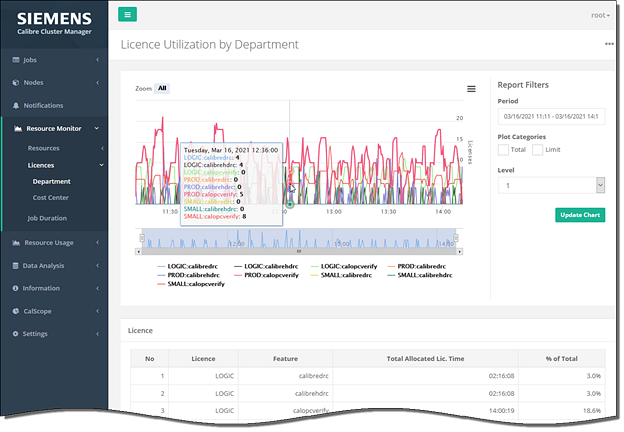
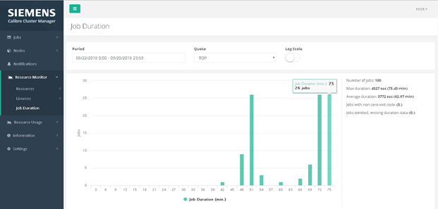

This procedure describes how to use the
Resource Monitor web pages in the CalCM dashboard application to
view resource, license, and job utilization information collected
by the resource monitoring application.
Procedure
- Open a
browser and enter the server name on which the CalCM daemon is running
and the dashboard server port specified in the CalCM configuration
file (calcmd.conf). For example,
DASHBOARDPORT = 9902
enter in the browser,
http://server_name:9902
- Select
the Resource Monitor menu
item.
This accesses the Resource Monitor
web pages. The left pane displays menu items and the right pane
displays report information according to the menu item selected
in the left pane. The default view is Resource Utilization by Department.
Figure 1. Resource Utilization by Department
- In the upper-right right, click the three dots
to display the chart options, which include X-Axis labels, Chart
Ordinal, and Time Format (Table) settings.
- Scroll
down in the window to view information and try out the controls
that are available for the Resource Utilization by Department page.
- In the
left pane, select the Cost Center menu option.
This accesses the Resource Utilization
by Cost Center page, which displays the CPU usage by department
and by cost center for the specified reporting period. This page includes
the same options as those found on the Resource Utilization by Department page,
with the exception that the Department Filters are replaced by Cost
Center Filters.
Figure 2. Resource Utilization by Cost Center
- In the left pane, select the Licenses menu
option.
This displays the License Utilization by Department
page.
- Scroll
down in the window to view information and try out the controls
that are available for the License Utilization by Department page.
Figure 3. License Utilization by Department
- In the
left pane, select the Cost Center menu option.
This displays the License Utilization by Cost Center
page. This page includes the same options as those found on the
License Utilization by Department page, with the exception that
the Department/Feature Filters are replaced by Cost Center/Feature Filters.
- In the
left pane, select the Job Duration menu option.
This displays the Job Duration page and a histogram
plot showing the distribution of the duration of finished jobs.
Figure 4. Job Duration
To the right of the plot, the following information is displayed
for jobs matching the report period, department, or cost center:
- Review
and try out the following options on the Job Duration page:
Period
— Use these controls to specify a time frame for displaying the
job duration information.
Quota — Use
to select the job quota group.
Log Scale —
Use this control to change the display from a histogram plot to
a logarithmic y-axis scale.
Results
You have now used the Resource Monitor web pages in the CalCM
dashboard web application to view the resources, license utilization,
and duration for your jobs.